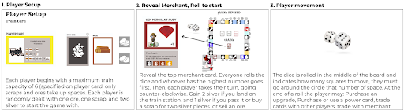
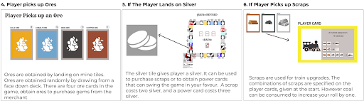
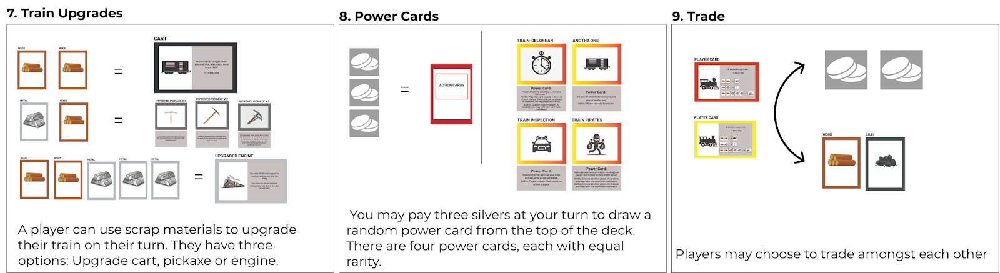
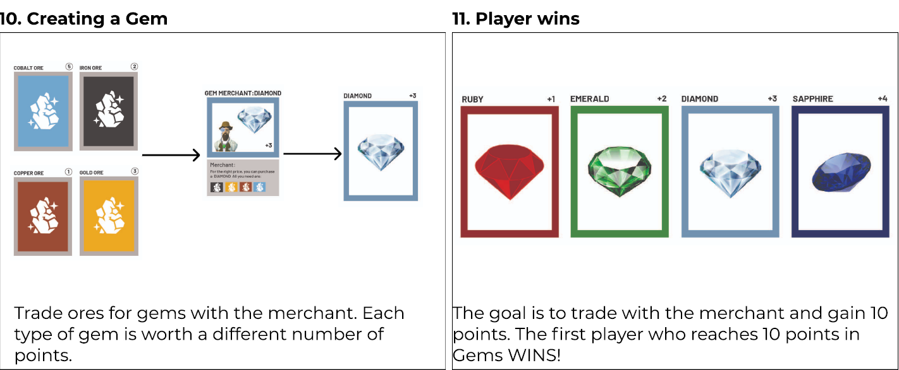

Game Overview
The objective of tRAINz is to travel along the tracks and obtain ores to trade gems with the merchant. Each gem is worth a different number of points. The goal is to trade with the merchant and gain 10 points. The first player who reaches 10 points wins.
People fun after analyzing other family friendly board games like the original Ticket to Ride, Monopoly, Clue, and others, we concluded that they are relatively neutral in design, with aims to appeal to a wide audience.
Storyboard




Poster